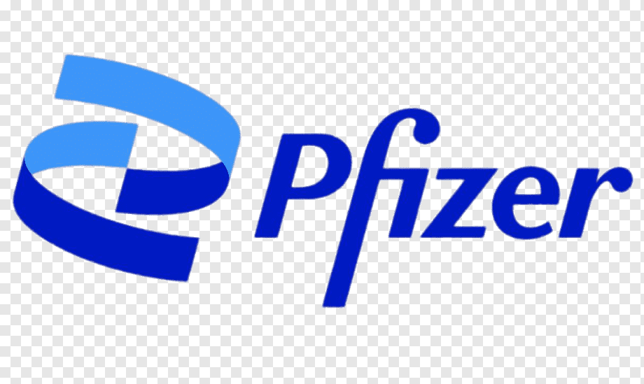

Experience

Research Assistant
University at Buffalo (Present)
Addressed domain shift in cancer WSI using stain normalization and adversarial training. Built scalable AI models for gigapixel pathology images.

Co-op Research Scientist
Pfizer (09/2024–04/2025)
Developed deep learning pipelines for WSI-based cancer analysis. Integrated AI insights into oncology workflows.
Digital Pathology Intern
Iron Mountain (06/2024–08/2024)
Applied AI for cell segmentation in pathology images. Automated preprocessing pipelines to improve diagnostic accuracy and reproducibility.

Guest Lecture
CAIMIF, India (2024)
Presented federated learning approaches in digital pathology with privacy-preserving AI and batch effect mitigation.
Guest Lecture
University at Buffalo (Spring 2024)
Lectured on machine learning for biomedical data: preprocessing, feature engineering, and clinical integration.

DevOps Intern
ISRO (06/2018–12/2018)
Created automated test pipelines using Selenium to support DevOps operations and reduce manual effort.